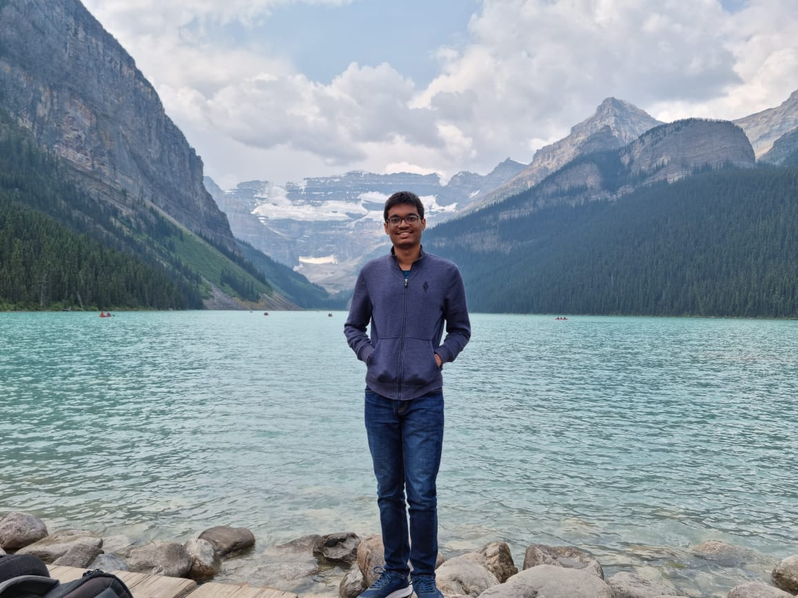
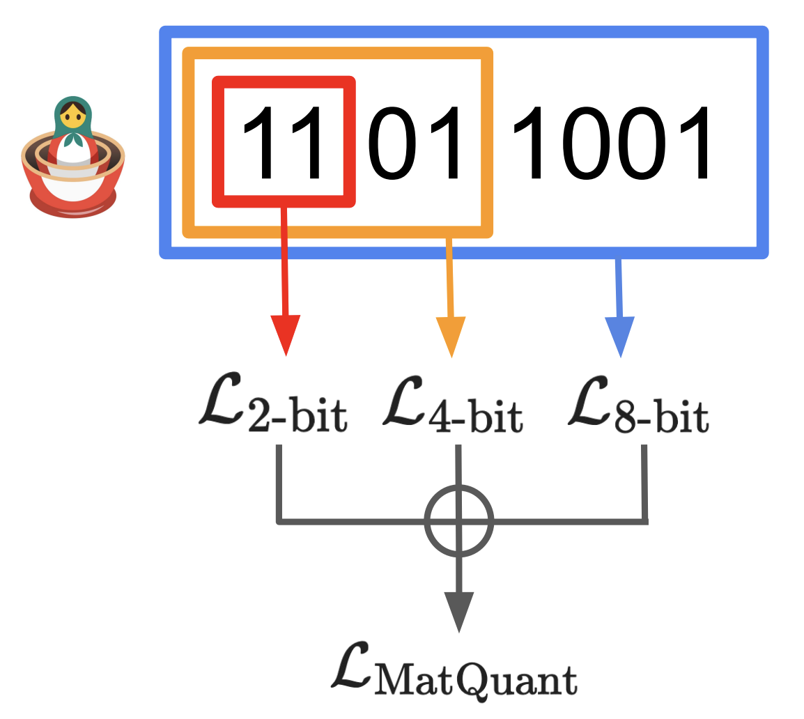
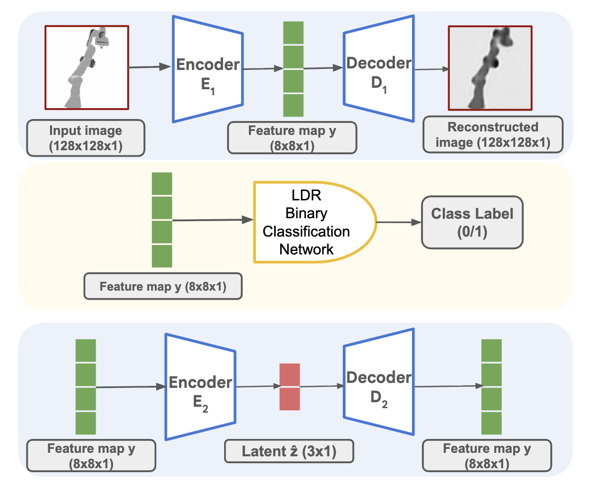
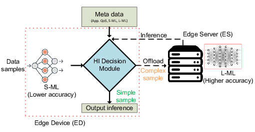
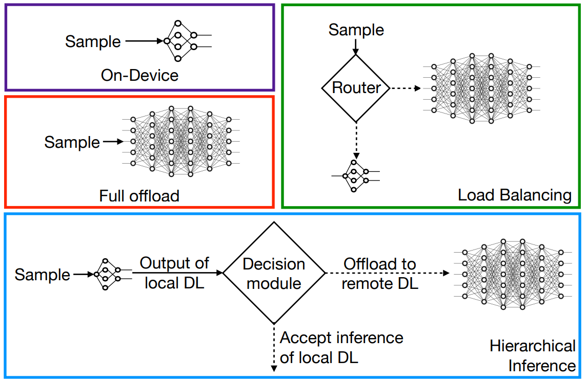
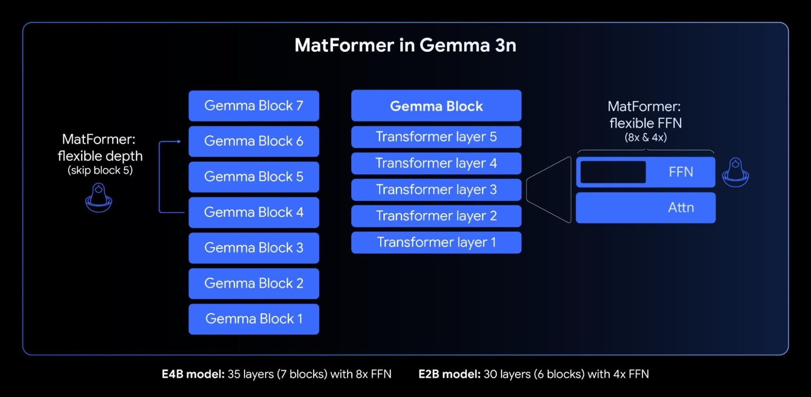

About Me
I am a Pre-Doctoral Researcher at Google DeepMind, India, as part of the Machine Learning and Optimization team. With my advisors, Dr. Aditya Kusupati and Dr. Prateek Jain, my research focuses on elastic and efficient pre-training, quantization, and reinforcement learning for chain-of-thought (CoT) post-training of LLMs. I also collaborate with Dr. Karthikeyan Shanmugam on score-based unsupervised learning for embodied reasoning and world modeling. During my tenure at IIT Bombay, I worked on Edge ML inference using Online Learning and Bandit Algorithms under the guidance of Dr. Sharayu Moharir and Dr. Jaya Prakash Champati.
My research interests focus on making LLMs more computationally efficient by enabling them to dynamically allocate their compute budget based on task complexity. I am keen on exploring training paradigms that move beyond next-token prediction to build robust world models for real world interactive reasoning which involves utilizing more effective feedback mechanisms, such as interventions and imitation learning, as alternatives to standard teacher-forcing architectures and simple, verifiable rewards.
Research
Gemini 2.5 Pro and Gemini 2.0
Contributed to Gemini Model Pretraining


ROPES: Robotic Pose Estimation via Score-based Causal Representation Learning
In Submission


